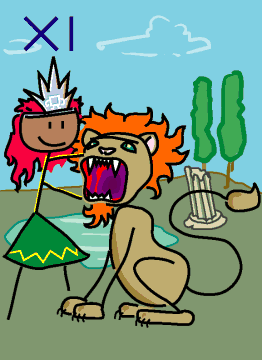

→
Damian Cugley →
Alleged Tarot 2002 →
png →
→
Damian Cugley →
Alleged Tarot 2002 →
png →
| « X. The Wheel of Fortune | XII. The Hanged Man » | |
|  | ||
Upright: moral strength, self-control
Reversed: helpless feelings, inhibition
In some decks this is card VIII—a modification designed to make the tarot deck better match the order of the signs of the zodiac (since Leo preceeds Libra in the zodiac). If you see the trumps as a progression through life, then it is nice that strength of mind preceeds the application of justice. Of course the oldest known tarot decks use unnumbered cards; for their owners the order of the trumps was either self-evident or irrelevant.
Having reverted to an older ordering, I did not use the older name, Fortitude, even though this might better suggest the significance of the card, which relates to strength of will or moral strength, rather than physical strength. The woman holding the jaws of a lion is the traditional personification of Fortitude (one of Plato’s cardinal virtues); the lion is her traditional prop just as the scales are Justice’s and wings and two jars are of Temperance. (The fourth cardinal virtue, Prudence, is not represented in the tarot deck.)
The lion can be seen as representing powerful emotional or physical feelings that one must direct to creative ends; both complete suppression and a free rein lead to bad outcomes.
See also the description on the Queen of Pentacles Tarot site
See also Thirteen’s description on the Aeclectic Tarot site
If your browser supports SVG, then you should visit the SVG version of this page. It is so much more cool!